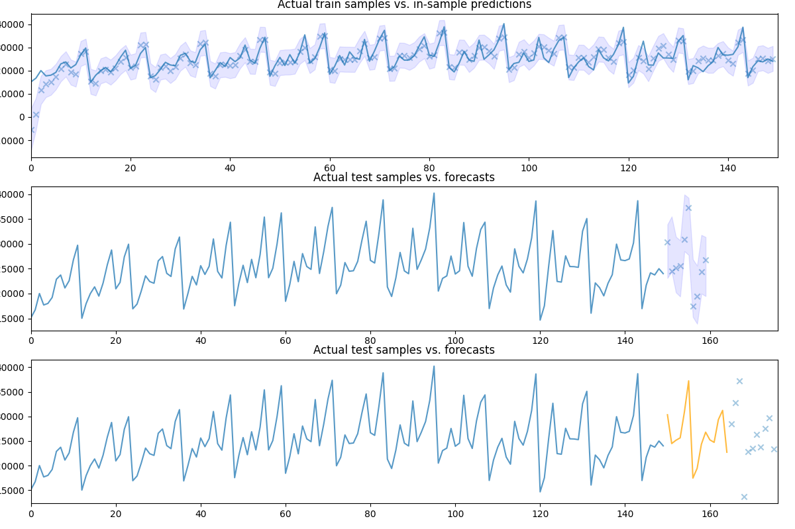

Note
Go to the end to download the full example code.
Pipelines with auto_arima
Like scikit-learn, pmdarima can fit “pipeline” models. That is, a pipeline
constitutes a list of arbitrary length comprised of any number of
BaseTransformer objects strung together ordinally, and finished with an
AutoARIMA object.
The benefit of a pipeline is the ability to condense a complex sequence of
stateful transformations into a single object that can call fit,
predict and update. It can also be serialized into one pickle file,
which greatly simplifies your life.

pmdarima version: 0.0.0
Performing stepwise search to minimize aic
ARIMA(2,1,2)(0,0,0)[0] intercept : AIC=2819.938, Time=0.50 sec
ARIMA(0,1,0)(0,0,0)[0] intercept : AIC=2942.625, Time=0.01 sec
ARIMA(1,1,0)(0,0,0)[0] intercept : AIC=2867.514, Time=0.09 sec
ARIMA(0,1,1)(0,0,0)[0] intercept : AIC=2830.585, Time=0.19 sec
ARIMA(0,1,0)(0,0,0)[0] : AIC=2940.651, Time=0.07 sec
ARIMA(1,1,2)(0,0,0)[0] intercept : AIC=2817.535, Time=0.37 sec
ARIMA(0,1,2)(0,0,0)[0] intercept : AIC=2814.904, Time=0.40 sec
ARIMA(0,1,3)(0,0,0)[0] intercept : AIC=2818.704, Time=0.77 sec
ARIMA(1,1,1)(0,0,0)[0] intercept : AIC=2817.377, Time=0.29 sec
ARIMA(1,1,3)(0,0,0)[0] intercept : AIC=inf, Time=0.89 sec
ARIMA(0,1,2)(0,0,0)[0] : AIC=2815.283, Time=0.22 sec
Best model: ARIMA(0,1,2)(0,0,0)[0] intercept
Total fit time: 3.806 seconds
Model fit:
Pipeline(steps=[('fourier', FourierFeaturizer(k=4, m=12)),
('arima',
AutoARIMA(error_action='ignore', seasonal=False, trace=1))])
Forecasts:
150 28518.732322
151 29963.386607
152 25827.057363
153 25060.786065
154 34235.809073
155 33509.078657
156 21083.205580
157 19764.901633
158 25895.806693
159 25434.080172
dtype: float64
[26536.09214882 34421.90896957 33695.17138342 21269.29668588
19950.99760081 26081.90217606 25620.17292927 24414.27048313
26098.8641561 28871.63031295 30770.65409768]
print(__doc__)
# Author: Taylor Smith <taylor.smith@alkaline-ml.com>
import numpy as np
import pmdarima as pm
from pmdarima import pipeline
from pmdarima import model_selection
from pmdarima import preprocessing as ppc
from pmdarima import arima
from matplotlib import pyplot as plt
print("pmdarima version: %s" % pm.__version__)
# Load the data and split it into separate pieces
data = pm.datasets.load_wineind()
train, test = model_selection.train_test_split(data, train_size=150)
# Let's create a pipeline with multiple stages... the Wineind dataset is
# seasonal, so we'll include a FourierFeaturizer so we can fit it without
# seasonality
pipe = pipeline.Pipeline([
("fourier", ppc.FourierFeaturizer(m=12, k=4)),
("arima", arima.AutoARIMA(stepwise=True, trace=1, error_action="ignore",
seasonal=False, # because we use Fourier
suppress_warnings=True))
])
pipe.fit(train)
print("Model fit:")
print(pipe)
# We can compute predictions the same way we would on a normal ARIMA object:
preds, conf_int = pipe.predict(n_periods=10, return_conf_int=True)
print("\nForecasts:")
print(preds)
# Let's take a look at the actual vs. the predicted values:
fig, axes = plt.subplots(3, 1, figsize=(12, 8))
fig.tight_layout()
# Visualize goodness of fit
in_sample_preds, in_sample_confint = \
pipe.predict_in_sample(X=None, return_conf_int=True)
n_train = train.shape[0]
x0 = np.arange(n_train)
axes[0].plot(x0, train, alpha=0.75)
axes[0].scatter(x0, in_sample_preds, alpha=0.4, marker='x')
axes[0].fill_between(x0, in_sample_confint[:, 0], in_sample_confint[:, 1],
alpha=0.1, color='b')
axes[0].set_title('Actual train samples vs. in-sample predictions')
axes[0].set_xlim((0, x0.shape[0]))
# Visualize actual + predicted
x1 = np.arange(n_train + preds.shape[0])
axes[1].plot(x1[:n_train], train, alpha=0.75)
# axes[1].scatter(x[n_train:], preds, alpha=0.4, marker='o')
axes[1].scatter(x1[n_train:], test[:preds.shape[0]], alpha=0.4, marker='x')
axes[1].fill_between(x1[n_train:], conf_int[:, 0], conf_int[:, 1],
alpha=0.1, color='b')
axes[1].set_title('Actual test samples vs. forecasts')
axes[1].set_xlim((0, data.shape[0]))
# We can also call `update` directly on the pipeline object, which will update
# the intermittent transformers, where necessary:
newly_observed, still_test = test[:15], test[15:]
pipe.update(newly_observed, maxiter=10)
# Calling predict will now predict from newly observed values
new_preds = pipe.predict(still_test.shape[0])
print(new_preds)
x2 = np.arange(data.shape[0])
n_trained_on = n_train + newly_observed.shape[0]
axes[2].plot(x2[:n_train], train, alpha=0.75)
axes[2].plot(x2[n_train: n_trained_on], newly_observed, alpha=0.75, c='orange')
# axes[2].scatter(x2[n_trained_on:], new_preds, alpha=0.4, marker='o')
axes[2].scatter(x2[n_trained_on:], still_test, alpha=0.4, marker='x')
axes[2].set_title('Actual test samples vs. forecasts')
axes[2].set_xlim((0, data.shape[0]))
plt.show()
Total running time of the script: (0 minutes 4.321 seconds)